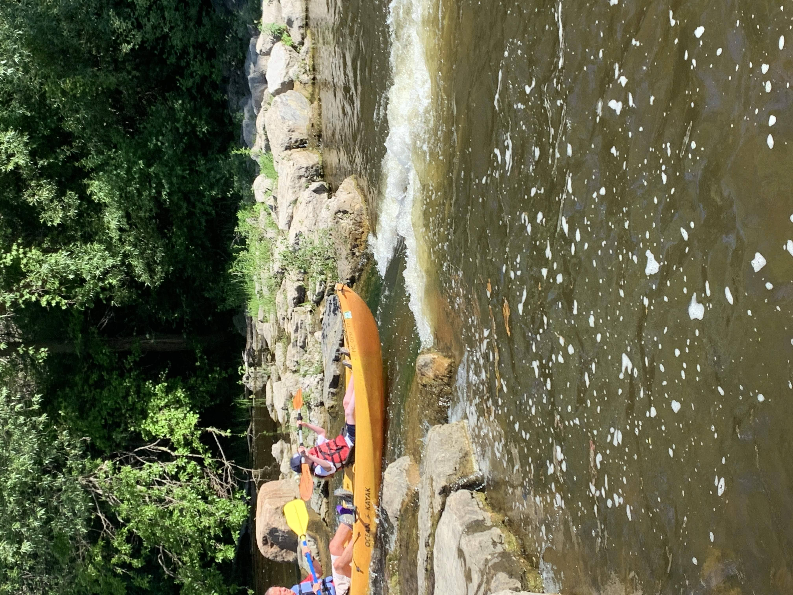
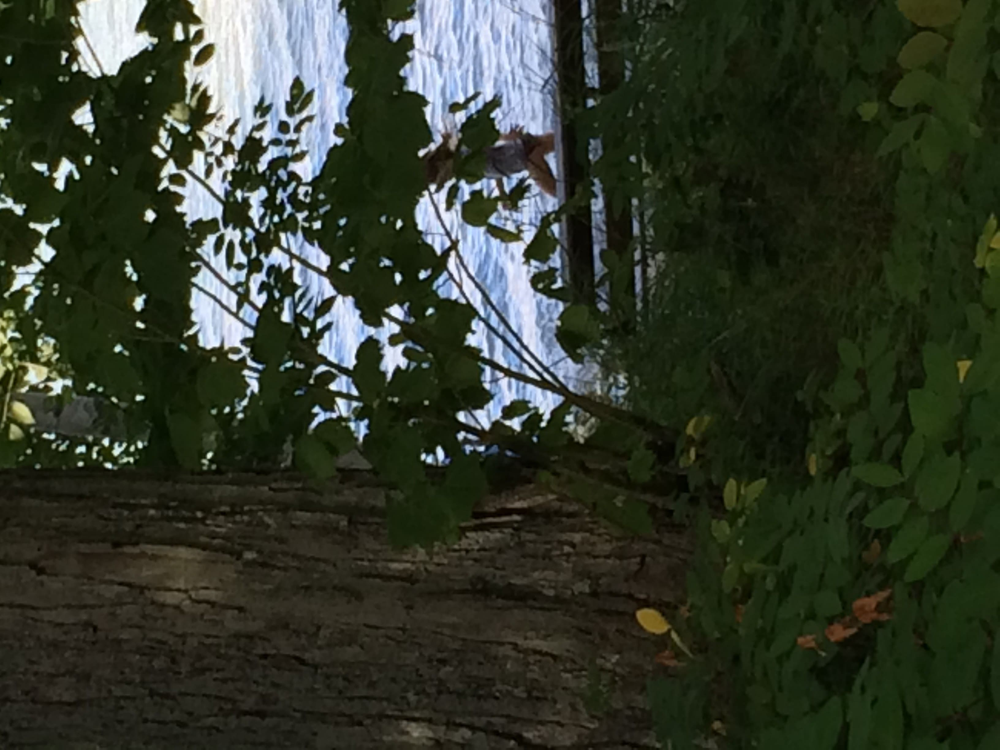
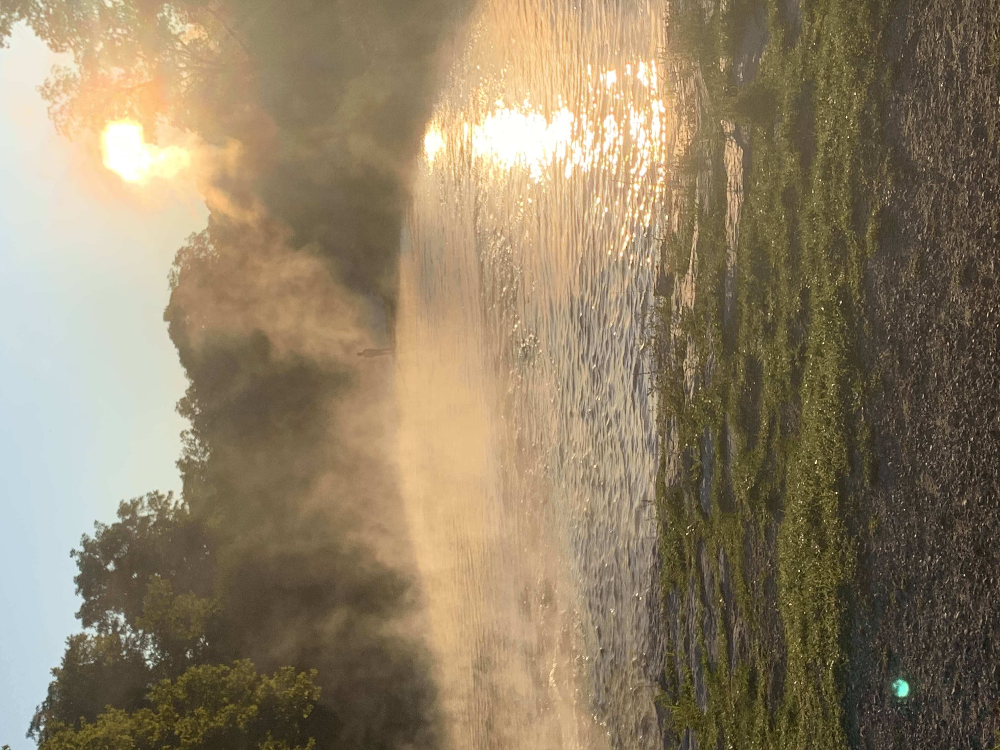
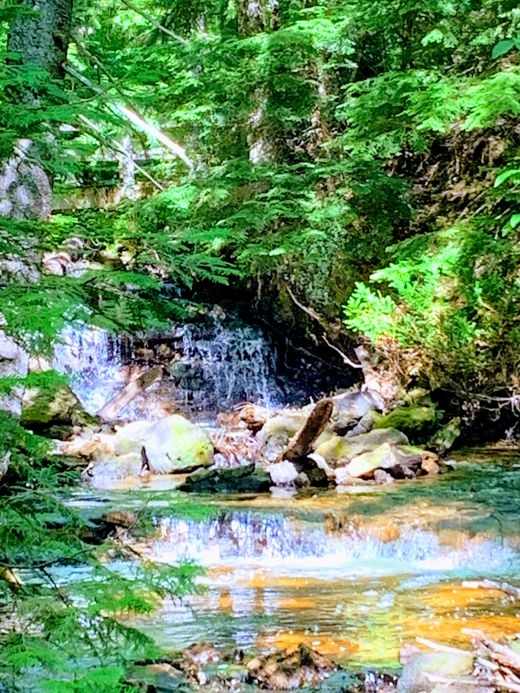
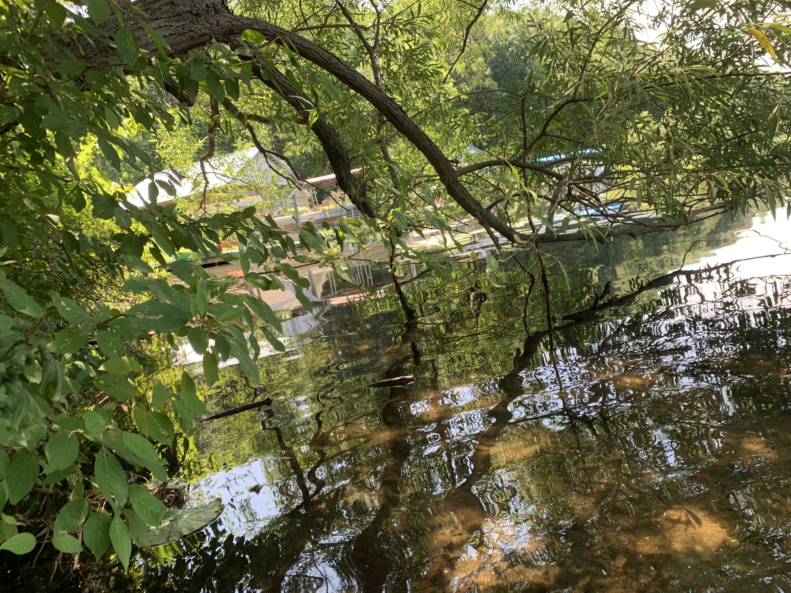

Park Trails & Nature Adventures
Exploring the wider state parks, rivers, and forested terrains with Bacon.








Exploring the wider state parks, rivers, and forested terrains with Bacon.




